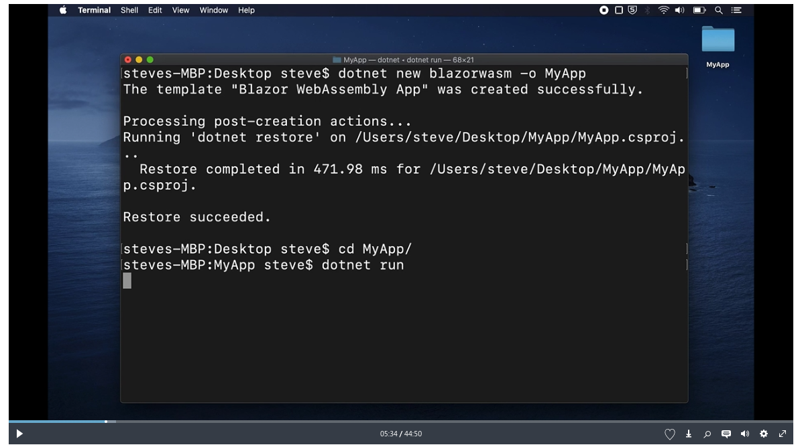
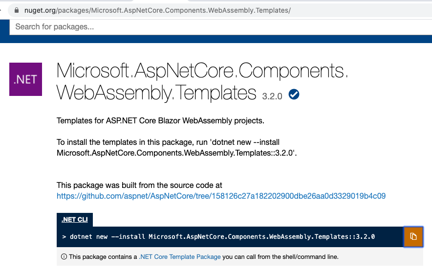
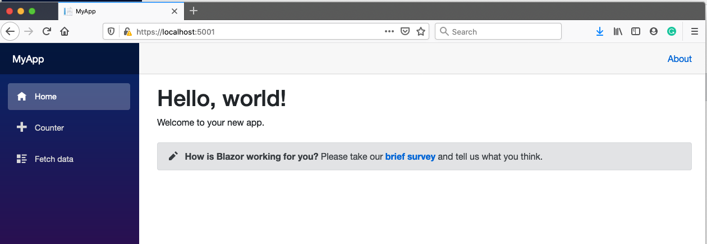
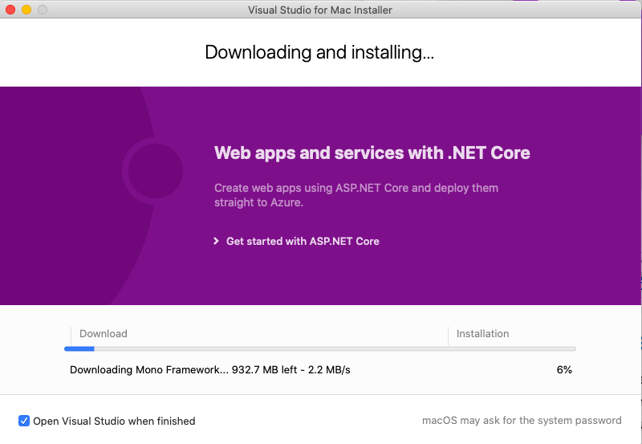
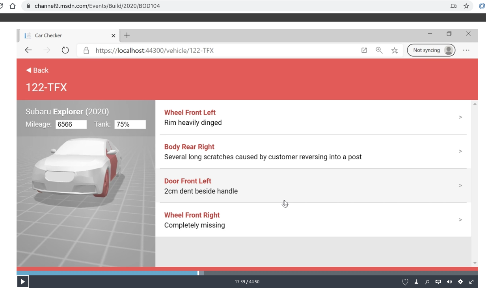
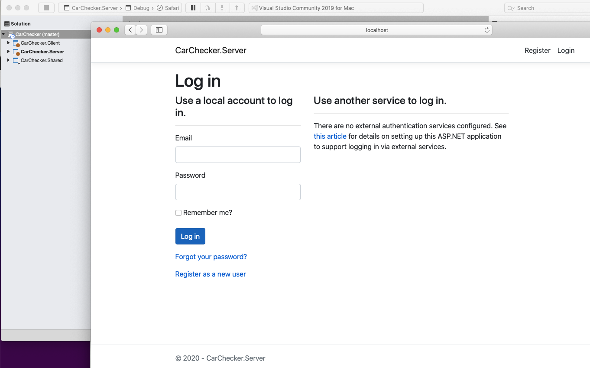
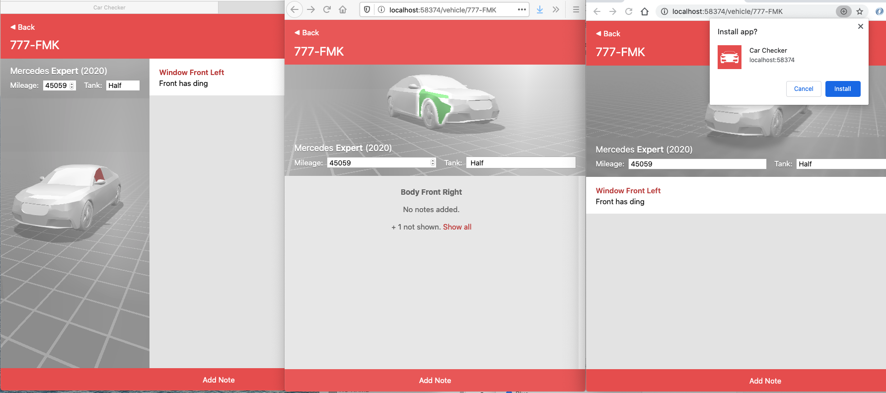
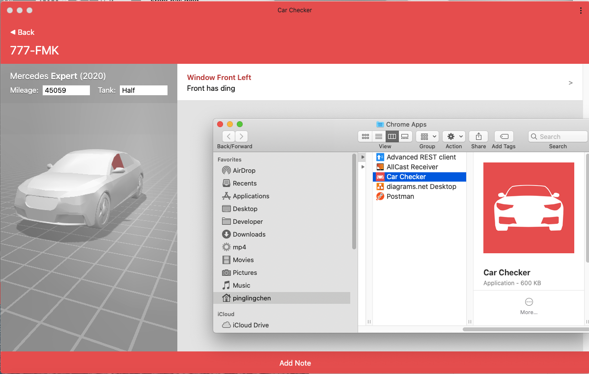

2020-06-17 Blazor WebAssembly
跟著視頻 Modern Web UI with Blazor WebAssembly，演練一下。
查看視頻
這位 Steve Sanderson 是主導 Blazor WebAssembly 的靈魂人物。講解清楚。
TA 先以命令行的方式創建項目。

我跟著做但沒有成功，沒有這個模版，上網找了答案，要加裝。

外形來看，有運行起來，有一點不一樣是目前本地在我這電腦本地 https 仍視為 Not Secure。這是另一個主題。

終究是要安裝VS2019，記錄一下下載的速度可以每秒2MB。

視頻上的範例有很精采的模擬汽車出租回來時的檢查。

標準做法：(1)先在github Fork (2)在本地 git clone (3)用VS2019打開 solution or project (4)Build and Debug
代碼OK，可以運行，先註冊用戶再登入。

在我的VS2019運行起來的，使用三種不同的流覽器，都很正常。這項目是合乎
PWA。就可以像App一樣安裝在本地，可以有個icon在電腦或手機畫面上。

果然可以下載成本地App來運行。

這視頻還有好幾主題，做出了很好演示。有完整代碼在這裡，SteveSandersonMS/CarChecker on Github
PWA
Progressive Web Apps are web apps that use emerging web browser APIs and features along with traditional progressive enhancement strategy to bring a native app-like user experience to cross-platform web applications. 詳細請看 MDN web docs。